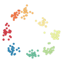

Documentation
Start here for installation, data format expectations, and API concepts.
Project status
Neuralign is an early research package accompanying a paper in preparation. The API may evolve before its first public release.

Tensor decomposition methods for aligning neural representations across recording sessions.
View on GitHubStart here for installation, data format expectations, and API concepts.
Neuralign is an early research package accompanying a paper in preparation. The API may evolve before its first public release.